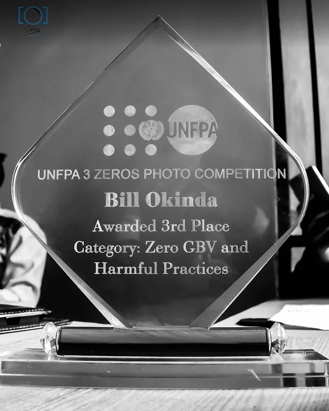

BTM Photography, by Bill Okinda
Weddings, events and portraits, shot as they really happened.
I started out as a photojournalist, and I still work that way: watching closely, staying out of the way, and catching the moments people remember. Based in Nairobi, happy to travel.
Selected work

3rd place, UNFPA 3 Zeros Photo Competition
Category: Zero GBV and Harmful Practices.
It is where my literature degree and my camera met: telling a hard story with care for the people in it.
What I shoot
Every quote is based on the day, the location and what you need delivered.
Weddings
Preparation, ceremony and reception, with a full edited gallery.
Events
Launches, conferences, graduations and celebrations.
Portraits
Professional headshots, family and personal portraits.
Documentary and concept
Campaign and storytelling images for NGOs and causes, handled with consent and care.
Request a quote
Tell me the date, place and what you have in mind. I'll come back with availability and a quote within two working days.
- Emailokinda27@gmail.com
- Based inNairobi, travels across Kenya